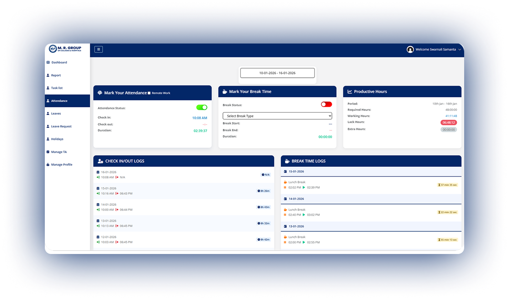
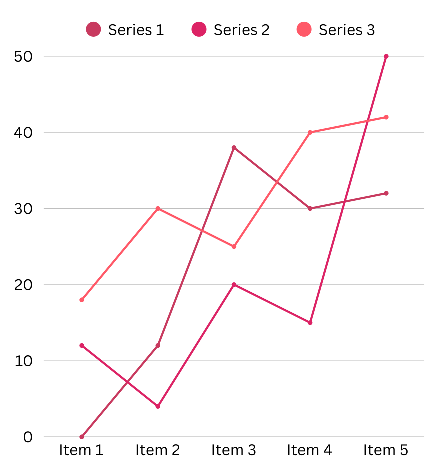

Run Your University, College & Institute Smarter
with Our All-in-One ERP Management System
ERP Management System
Streamline
Admissions, Finance, Administrative and Employee Management. Management—All in One System
Trusted by 14,000+ bof SDRs,Sales Ops,Team Leads &
more

Integrations
Integrations that make life easier.
No switching tabs, no copy-paste chaos. etcCRM fits into your
workflow.
ETC University ERP Designed for Complete Campus Management
ETC University ERP system brings every department together on
a single, intelligent digital platform. It seamlessly manages
admissions, academics, leads, cashbook, due management,
reception desk operations, HR, statutory compliance and more.
For employees, the system simplifies attendance tracking, task
management, leave approvals, etc, ensuring smooth coordination
across the entire institution.
Built with flexibility and scalability in mind, the University
Management System includes multiple advanced modules covering
academic, administrative and operational needs, designed to
adapt to university workflows and can be customized as per
institutional needs.
The platform can be installed in the data centre of the
university or be hosted on a cloud platform, where full
control over the data and performance is available. Using
real-time insights, automated workflow and paperless
operations, our ERP management software eliminates operational
chaos and enables faster, smarter decision-making.
Problem
Why Managing a University Without ERP Becomes a Challenge
Universities handle thousands of daily academic and administrative
activities. When these processes run on disconnected tools,
registers and spreadsheets, inefficiency becomes inevitable. Data
gaps, manual work and delayed communication affect students, faculty
and administrators alike.
Before
Without a Unified University ERP
1. Disconnected Departments
Admissions, academics, finance, HR and front-desk operations
function in silos, making coordination slow and error-prone.
2. Heavy Paperwork & Manual Effort
Attendance, leave approvals, fee tracking and reporting rely
on manual processes that consume time and increase
inaccuracies.
3.Limited Oversight for Management
University leadership struggles to access real-time insights
on admissions progress, dues status, staff availability, or
compliance readiness.
Vs
After
With the ETC University ERP System
1. One Platform for the Entire Campus
All core functions like admissions, academics, cashbook,
dues, reception desk and employee operations are connected
through a single intelligent system.
2. Automation That Saves Time
From employee attendance and leave management to task
assignments and fee tracking, workflows are automated to
reduce delays and administrative burden.
3. Real-Time Insights & Better Decisions
Live dashboards and reports provide complete operational
visibility, enabling faster decision-making and improved
institutional control.
Problem
Less Complexity. More Institutional Control
ETC University ERP Management Software will reduce fragmentation,
manual processes, and delays in operations. The system integrates
all institutional functions in one secure and safe platform- it
provides real-time visibility and easier coordination without
paperwork and detached tools.

One Unified Digital Platform
Replace multiple systems and spreadsheets with one centralized
ERP designed for universities to replace fragmented systems with
a connected digital environment. Information stays structured,
accessible, and synchronized across departments, ensuring
consistency and accuracy.
Smarter Lead Management - from Enquiry to Enrollment
Process all the student inquiries in a single channel of
management. The platform allows institutions to monitor lead
status in real-time, follow-ups and progress, which enables
institutions to respond quicker and engage in a well-organized
communication throughout the enrolment process.
Operate with Data-Driven Confidence
Intuitive dashboards and reports give a clear, real-time picture
of the institutional performance, progress and status, enhancing
quicker and more assured informed decision making, which
contributes to transparency, efficiency and institutional
growth.
Automation That Reduces Manual Effort
Incorporated automation makes the routine processes easier and
makes sure that the work is performed on time due to the
system-based workflows and notifications. This minimizes the use
of manual labour, minimises errors, quicker turnaround and
efficiency, consistency, and accuracy.
Cost-Effective in the Long Run
It renders operations cost-effective through standardization of
processes and the generation of uniformity within the
institution. The workflows are predictable and delay, repetition
andinefficiencies that add costs silently are minimized In the
long-run.
Connect With Us
Looking to enhance institutional efficiency with a smart ERP
management system?
Complete ERP system that will streamline academic management,
automate administration and enhance institutional efficiency with
one dashboard. Book a free demonstration to experience hassle-free
academic and administrative management.
View photo requirements & guidelines
Comprehensive Solutions for Campus Management
🎓
Student Portal & App
📅
Time Table Management
📝
Examinations & Marksheet
🗓️
Calendar Management
🎓
Student Portal & App
📅
Time Table Management
📝
Examinations & Marksheet
🗓️
Calendar Management
Why ETC’s University Management ERP Software?
ETC University Management ERP Software is designed to support
universities with a reliable, flexible and scalable digital system.
It adapts to institutional needs, ensures data accuracy and
security, and provides real-time visibility.
ETC ERP is more than a software solution supported by a good
implementation guide and flexible deployment models. It creates a
strong digital architecture, which assists universities to gain
clarity in their operations, maintain process transparency and
remain prepared in the future of academic and administrative
development.
📢
Built Specifically for Universities
Designed to align with institutional workflows, ensuring
relevance, adaptability and smooth adoption.
📄
Unified and Scalable Architecture
A single, robust platform that grows with institutional needs
without disrupting existing systems.
🗂️
Automation with Real-Time Visibility
Streamlines processes and offers precise real-time information
to support improved decision-making.
🗂️
Protected, Trustworthy, and Future Proof
Developed with high data security, compliance and stability of
the system over time.
📢 Inter-Department Announcements
📄 Policy & Circular Broadcasts
Capabilities
Smart University ERP Management Software – Core Capabilities
👥
Role-Based System Access
Our ERP also has secure role-based access by the administrators,
faculty, students and management in your university with dedicated
dashboard which guarantees the privacy of data, accountability and
effective inter-departmental cooperation.
🖥️
Simplified Digital Interface
The interface of ETC ERP platform is clean and intuitively
designed and needs minimal training. The end users find it easy to
navigate academic, administrative and financial modules, enhancing
adoption and daily operational efficiencies.
☁️
Anywhere, Anytime Connectivity
The cloud-enabled system enables the stakeholders to access the
system at any place, any device. On campus and off, users are kept
informed in real time on academic records, reports and updates of
the institution.
⚙️
Flexible Module configuration
THE ETC ERP system is flexible to the individual structure and
policies of a university. The modules can be enabled or extended
depending on the needs of the institution to enable alignment with
the academic processes and the administrative processes.
📊
Information-driven Intelligence and Analytics
High-level reporting tools are used to turn raw data into valuable
information. Real-time dashboards enable the leaders of
universities to track admissions, attendance, finances and
performance metrics to make informed decisions.
📝
Integrated Digital Assessment Management
The site facilitates digital planning of examinations, assessment
and processing of results. The ERP ensures accuracy, transparency,
and effective academic evaluations through the scheduling of exams
and the publishing of results.
FAQ
Frequently Asked Questions
No switching tabs, no copy-paste chaos. etcCRM fits into your
workflow.
What is University ERP Software and How Does It Work?
University ERP software is a digital platform that is used to
simplify administrative and academic tasks of educational
establishments. It combines the functions such as admissions,
attendance, examinations, finance, library management and human
resources into one platform. It enhances efficiency because it
automates routine processes, minimizes manual errors and offers
real time insights, allowing institutions to make decisions based
on data.
Why Do Colleges Need ERP Management Software?
Colleges have complicated operations, such as student record
management, payroll and examination results. ERP management
software brings these tasks together, decreases the administrative
load and makes the data handling accurate. It saves time,
streamlines resources and improves the overall experience of both
staff and students with such features as automated reporting and
flow of information across the different departments.
What Are the Key Features of Institutional ERP Software?
The contemporary institutional ERP programs encompass student
admissions, attendance tracking, fee management, exam scheduling,
human resources, library management and reporting dashboards.
Mobile accessibility, cloud integration, and AI-driven analytics
are also available on our platforms.
How Does ERP Software Improve College Administration?
Repetitive administrative functions are automated by our ERP
software, which removes paperwork and manual errors. It automates
operations such as registering students, collecting fees and staff
management and offers a centralized dashboard that allows one to
monitor operations. This enhances transparency, quick decision
making and enables the administrators to concentrate more on
strategic planning and less on routine.
What Are the Benefits of Cloud-Based ERP for Educational
Institutions?
The Cloud-based ERP systems offered by ETC are flexible, scaled
and could be accessed remotely. They eliminate the costly
on-premise infrastructure and ease software updates. Cloud ERP
provides secure storage and real time access and disaster recovery
services, enabling staff, faculty and students to access vital
information at any time and anywhere to boost productivity and
cooperation.
How Secure is University ERP Software?
University ERP systems are structured in such a way that they have
two or more levels of security, such as the storage of data in
encrypted form, the use of secure protocols for logging in and
role based access controls. This provides security to delicate
information such as student records, financial reports and test
scores. Frequent updates of the software, a safe backup, and
adherence to data privacy laws also contribute to the increased
safety of institutional data.
How Does ERP Software Help in Fee Management?
Our ERP software will automate the fee collection process, create
invoices and track payments in real-time. It gives a variety of
ways of payment, reminds of outstanding payments, and minimizes
the chances of human error in financial accounts. Administrators
are also able to come up with detailed financial reports with
ease, track outstanding dues and maintain transparency in the
financial operations of the institution.
Can ERP Software Integrate With Other Educational Tools?
Yes, ERP systems of ETC are normally created to be combined with various other applications such as learning management systems (LMS), library software, accounting tools and internet payment gateways. The interoperability will guarantee the smooth flow of data among various systems, which will make the work more productive, minimize manual labour, and provide students, faculty, and administrative staff with a single digital ecosystem.
How Long Does It Take to Implement University ERP Software?
The time taken for the implementation process is different depending on the size of the institution and the number of modules needed. On average, the implementation of ERP can be carried out within 2-3 months in a small college and 4-6 months or longer in large universities. A well thought planning, training and data migration strategies are essential in ensuring a smooth transition whereby the software will be able to support the needs of the institution without interfering with the current operations.
How to Choose the Right ERP Software for a College or University?
The process of selecting an appropriate ERP software takes into consideration aspects like scalability, ease of use, cost-effectiveness, accessibility to clouds, security features and support. Software that can expand in tandem with the needs of the institutions should be considered by the institutions, and those that can be integrated with the existing tools and provide complete modules in academic, administrative and financial management. Demos, reviews by customers and the reliability of the vendor are also important considerations in making an informed decision.
How Long Does It Take to Implement University ERP Software?
The time taken for the implementation process is different depending on the size of the institution and the number of modules needed. On average, the implementation of ERP can be carried out within 2-3 months in a small college and 4-6 months or longer in large universities. A well thought planning, training and data migration strategies are essential in ensuring a smooth transition whereby the software will be able to support the needs of the institution without interfering with the current operations.
How to Choose the Right ERP Software for a College or University?
The process of selecting an appropriate ERP software takes into consideration aspects like scalability, ease of use, cost-effectiveness, accessibility to clouds, security features and support. Software that can expand in tandem with the needs of the institutions should be considered by the institutions, and those that can be integrated with the existing tools and provide complete modules in academic, administrative and financial management. Demos, reviews by customers and the reliability of the vendor are also important considerations in making an informed decision.
What are the benefits of using an ERP for an educational institution?
ERP software automates all the administrative and academic procedures under a single platform, minimizing on the manual work and errors. It also enhances communication, offers real-time reporting, offers students self-service portals, and secures data. It, in totality, saves time, reduces costs and makes the institution more efficient and organized.
Can we customize ERP modules as per our institution’s needs?
Yes, ERP modules can be completely adjusted. The institutions are able to select and select features such as admissions, attendance, finance, or library management to fit their unique workflows. The flexibility will also make the ERP expand alongside the institution and facilitate the efficient operations of staff and students.
Try our Demo
Fill in your details and we’ll get in touch shortly.